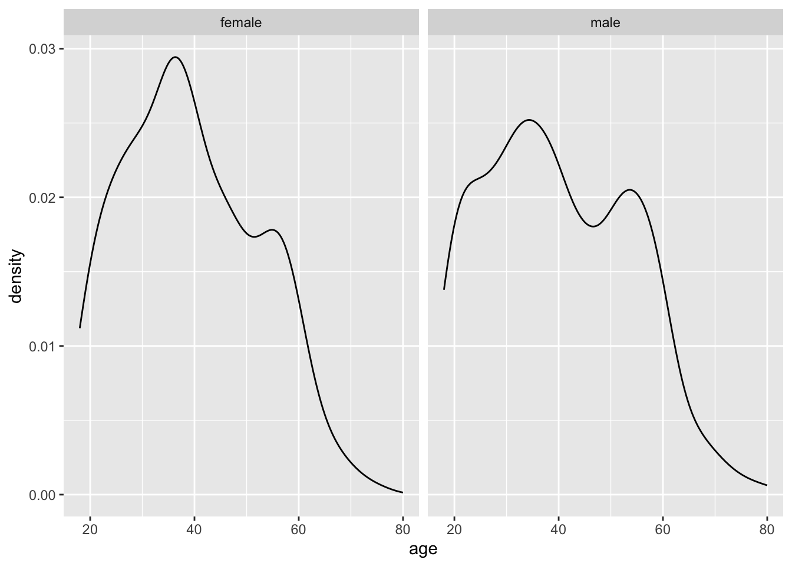
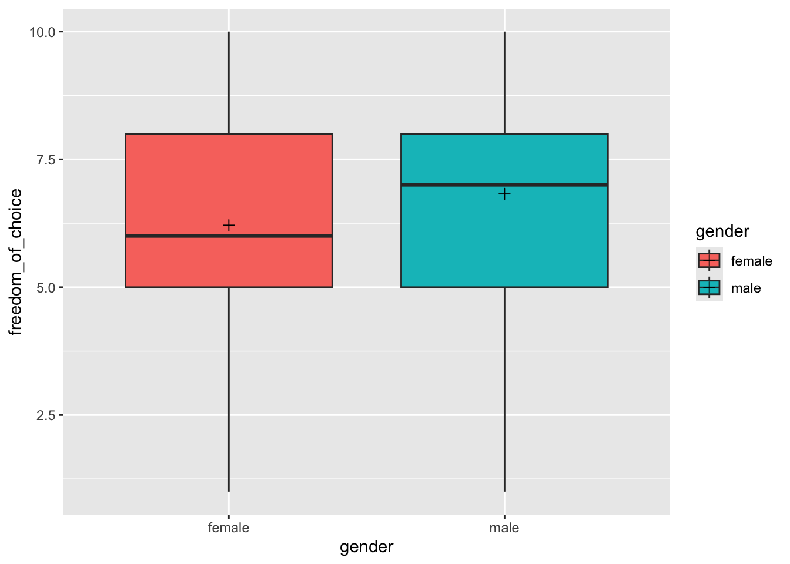
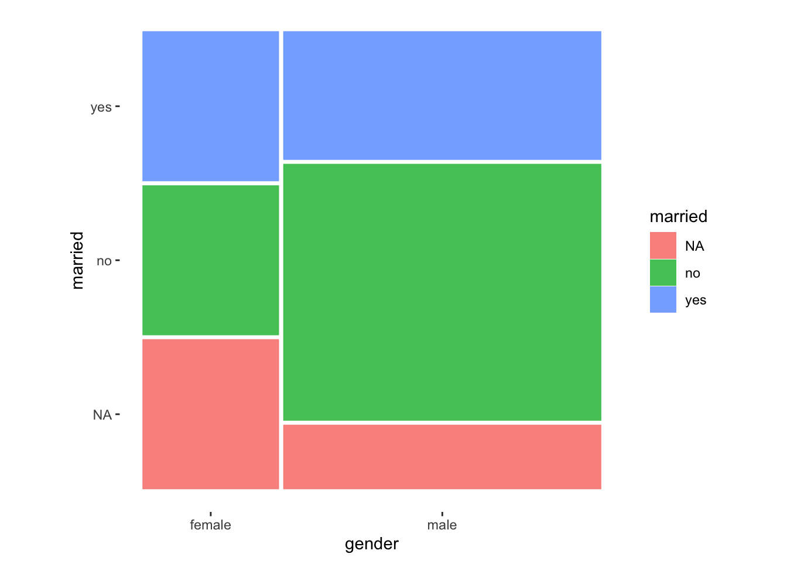
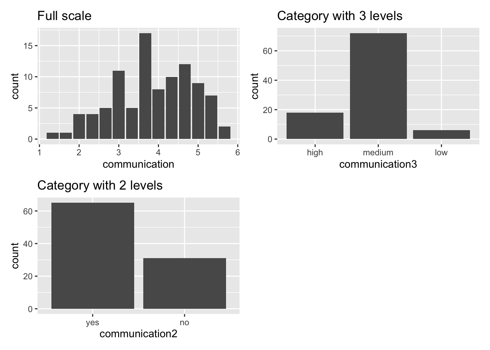

Social Sciences is about the study of human beings and their interactions. As such, we frequently want to compare two or more groups of human beings, organisations, teams, countries, etc., with each other to see whether they are similar or different from each other. Sometimes we also want to track individuals over time and see how they may have changed in some way or other. In short, comparing groups is an essential technique to make inferences and helps us better understand the diversity surrounding us.
If we want to perform a group comparison, we have to consider which technique is most appropriate for our data. For example, some of it might be related to the type of data we have collected, and other aspects might be linked to the distribution of the data. More specifically, before we apply any statistical technique, we have to consider at least the following:
the assumptions made by analytical techniques about our data.
While we covered missing data and outliers in previous chapters, we have yet to discuss assumptions. For group comparisons, there are three main questions we need to answer:
Are the groups big enough to be compared, i.e. are they comparable?
Is my data parametric or non-parametric? (see Chapter 9)
How many groups do I wish to compare?
Are these groups made up of different people (unpaired) or the same people compared over time (paired)?
In the following, we will look at group comparisons for parametric and non-parametric data in each category and use the wvs_nona dataset, i.e. the wvs data frame after we performed imputation (see also Section 7.7.3). Since we already covered how to test whether data is parametric or non-parametric, we will forgo this step out of pure convenience and remain succinct. We also ignore any potential outliers. Thus, parametric and non-parametric tests will be demonstrated with the same dataset and the same variables.
11.1 Comparability: Apples vs Oranges
Before we can jump into group comparisons, we need to make ourselves aware of whether our groups can be compared in the first place. ‘Comparability’ should not be confused with ‘are the groups equal’. In many cases, we don’t want groups to be equal in terms of participants, e.g. between-subject studies. On the other hand, we might wish for groups to be perfectly equal when we perform within-subject studies. Thus, asking whether groups are comparable is unrelated to whether the subjects in our study are the same. Instead, we are looking at the characteristics of our groups. Some commonly considered features include:
Size: Are the groups about equally large?
Time: Was the data collected around the same time?
Exogenous variables: Is the distribution of characteristics we are not interested in approximately the same across groups?
When we compare groups, we want to minimise the systematic differences that are not the primary focus of our study. Using the right sampling technique can help with this matter. For example, using a random sample and performing a random allocation to groups can help achieve comparable groups and remove systematic differences in a way no other sampling strategy can. However, there is still no guarantee that they will be comparable Berger (2006). Besides, we also face the challenge that in Social Sciences, we do not always have the option of random sampling. For example, International Business studies heavily rely on lists provided by others (e.g. the European Union, Fortune 500, etc.), personal judgement and convenience sampling. Only a small proportion perform probability sampling (Yang, Wang, and Su 2006). In short, there is no reason to worry if your sampling technique is not random. However, it emphasises the need to understand your sample and your groups thoroughly. To inspect characteristics of groups we wish to compare, we can use descriptive statistics as we covered them in Chapter 8. However, this time, we apply these techniques to subsets of our data and not the entire dataset.
For example, we might wish to compare female and male Egyptians (see Section 11.2.1). If we wanted to make sure these two groups can be compared, we might have to check (among other characteristics) whether their age is distributed similarly. We can use the functions we already know to create a plot to investigate this matter and apply the function facet_wrap() at the end.
# Only select participants from 'Egypt'comp <- wvs_nona |>filter(country =="Egypt")# Plot distribution using facet_wrap()comp |>ggplot(aes(x = age)) +geom_density() +# Create a plot for each gender categoryfacet_wrap(~ gender)

The function facet_wrap(~ gender) allows us to create two plots based on a grouping variable, i.e. gender. We have to use a tilde (~) to indicate the group. This character is related to writing formulas in R, which we will cover in more detail in the following chapters. Being able to place plots next to each other can be very beneficial for comparison. This way, inspecting the normality across multiple groups can be done within seconds. On the other hand, creating separate plots for each group can take a long time, for example, comparing 48 countries.
Alternatively, we could also create density plots using the ggridges package, which puts all the plots onto the same x-axis, making it even easier to see the differences across groups.
In light of both data visualisations, we can conclude that the distribution of age across both gender groups is fairly similar and likely not different between groups. Of course, we could also statistically explore this using a suitable test before performing the main group comparison. However, we first have to understand how we can perform such tests.
In the following chapters, we will primarily rely on the package rstatix, which offers a pipe-friendly approach to using the built-in functions of R to perform our group comparisons. However, you are welcome to try the basic functions, which you can find in the Appendix.
library(rstatix)
11.2 Comparing two groups
The simplest of comparisons is the one where you only have two groups. These groups could either consist of different people (unpaired) or represent two measurements of the same individuals (paired). We will cover both scenarios in the following chapter because they require slightly different computational techniques.
11.2.1 Two unpaired groups
An unpaired group test assumes that the observations in each group are not related to each other, for example, observations in each group are collected from different individuals.
Our first comparison will be participants from Egypt, and we want to understand whether male and female citizens in this country perceive their freedom_of_choice differently or equally.
We first can compare these two groups using our trusty geom_boxplot() (or any variation) and use different fill colours for each group.
# Compute the mean/median for and size of each groupgroup_means <- comp |>group_by(gender) |>summarise(mean =mean(freedom_of_choice),median =median(freedom_of_choice),n =n())group_means
# A tibble: 2 × 4
gender mean median n
<fct> <dbl> <dbl> <int>
1 female 6.21 6 579
2 male 6.82 7 621
# Create our data visualisationcomp |>ggplot(aes(x = gender, y = freedom_of_choice, fill = gender)) +geom_boxplot() +# Add the mean for each groupgeom_point(data = group_means,aes(x = gender, y = mean),shape =3,size =2)

While the distribution looks similar, we notice that the median and the mean (marked by the cross inside the boxplot) are slightly higher for male participants. Thus, we can suspect some differences between these two groups, but we do not know whether these differences are significant or not. Therefore, to consider the significance (remember Section 10.3) and the effect size (see Table 10.2), we have to perform statistical tests.
Table 11.1 summarises the different tests and functions to perform the group comparison computationally. It is important to note that the parametric test compares the means of two groups, while the non-parametric test compares medians. All of these tests turn significant if the differences between groups are large enough. Thus, significant results can be read as ‘these groups are significantly different from each other’. Of course, if the test is not significant, the groups are considered to be not different. For parametric tests, i.e. t_test(), it is also essential to indicate whether the variances between these two groups are equal or not. Remember, the equality of variances was one of the assumptions for parametric tests. The Welch t-test can be used if the variances are not equal, but all other criteria for normality are met. By setting var.equal = TRUE, a regular T-Test would be performed. By default, t_test() assumes that variances are not equal. Make sure you test for homogeneity of variance before making your decision (see Section 9.5)
Table 11.1: Comparing two unpaired groups
Data
Test
Function
Effect size
Function
P
T-Test
t_test(var.equal = TRUE)
Cohen’s d
cohens_d()
P
Welch T-Test
t_test(var.equal = FALSE)
Cohen’s d
cohens_d()
NP
Mann-Whitney U
wilcox_test(paired = FALSE)
Wilcoxon R
wilcox_effsize()
Note: P … Parametric | NP … Non-parametric
With this information in hand, we can start comparing the female Egyptians with the male ones using both the parametric and the non-parametric test for illustration purposes only. By setting detailed = TRUE, we can obtain the maximum amount of information for certain comparisons. In such cases, it is advisable to use glimpse(). This will make the output (a tibble) easier to read because each row presents one piece of information, rather than having one row with many columns.
You might notice that the notation within the functions for group tests looks somewhat different to what we are used to, i.e. we use the ~ (‘tilde’) symbol. This is because some functions take a formula as their attribute, and to distinguish the dependent and independent variables from each other, we use ~. A more generic notation of how formulas in functions work is shown below, where DV stands for dependent variable and IV stands for independent variable:
function(formula = DV ~ IV)
Even for multiple groups, group comparisons usually only have one independent variable, i.e. the grouping variable. Grouping variables are generally of the type factor. In the case of two groups, we have two levels present in this factor. For example, our variable gender contains two levels: female and male. If there are multiple groups, the factor comprises various levels, e.g. the variable country includes levels of 48 countries.
No matter which test we run for our data, it appears as if the difference is significant, i.e. \(p < 0.05\). However, how big/important is the difference? The effect size provides the answer to this. The interpretation of the effect size follows the explanations in Chapter 10, where we looked at the strength of the correlation of two variables. However, different analytical techniques require different effect size measures, implying that we have to use different benchmarks. To help us with the interpretation, we can use the effectsize package and their set of interpret_*() functions (see also Indices of Effect Sizes) if interprations of our out statistical output are not automatically provided. Some functions of rstatix already provide the outcome from the effectsize package when we run the analysis. This is quite handy. Sometimes, there are even more than one way of computing the effect size. For example, we can choose between the classic Wilcoxon R or the rank-biserial correlation coefficient for the Mann-Whitney test. In practice, you have to be explicit about how you computed the effect size. The differences between the two measures are often marginal and a matter of taste (or should I say: Your reviewers’ taste). Throughout this chapter, I will rely on the effect sizes most commonly found in Social Sciences publications. However, feel free to explore other indices as well, especially those offered in the effectsize package.
# After parametric testcomp |>cohens_d(freedom_of_choice ~ gender,var.equal =TRUE,ci =TRUE) |>glimpse()
Looking at our test results, the female Egyptians perceive freedom_of_choice differently from their male counterparts. This is in line with our boxplots. However, the effect sizes tend to be small, which means the differences between the two groups is marginal. Similar to correlations, group comparisons need to be analysed in two stages, answering two questions:
Is the difference between groups significant?
If it is significant, is the difference small, medium or large?
Combining both analytical steps gives us a comprehensive answer to our research question and enables us to derive meaningful conclusions. This applies to all group comparisons covered in this book.
11.2.2 Two paired groups
Sometimes, we are not interested in the difference between subjects, but within them, i.e., we want to know whether the same person provides similar or different responses at two different times. Thus, it becomes evident that observations need to be somehow linked to each other. Paired groups are frequently used in longitudinal and experimental studies (e.g., pre-test vs post-test). For example, we might be interested to know whether people in England experienced different levels of anxiety over time. By analysing data provided in hie_15_21, we can examine changes in anxiety levels within the same population between 2015 and 2021 and find an answer to our question.
Let us begin our investigative journey by creating boxplots to compare the levels of anxiety from 2015 with those from 2021. However, in a first step, we need to convert the variable year, which is a numeric value in this dataset, into a factor. This will allow us to treat each year as a group for the entirety of our analysis.
Considering this plot, we can ascertain that there is a slight increase in feelings_of_anxiety which is concerning. However, it is tough to say whether these differences are large, significant and, therefore, important. Instead we likely have to find a way to assess this statistically by crunching the numbers.
Table 11.2 summarises which tests and functions need to be performed when our data is parametric or non-parametric. In both cases, the functions are the same as those of the unpaired group comparisons, but we need to add the attribute paired = TRUE. Still, the interpretations between the unpaired and paired tests remain the same. Also, be aware that some tests have changed in name, e.g. the Mann-Whitney U test has become the Wilcoxon Signed Rank Test. Even though we use the same functions as before, by changing the attribute paired to TRUE, we also change the computational technique to obtain the results. Thus, remember that the same function can perform different computations which are not comparable. While this practice is handy, because it is easier to remember a function, it can also easily lead to mistakes if the wrong parameters were set
Table 11.2: Comparing two paired groups
Data
Test
Function
Effect size
Function
P
T-Test
t_test(paired = TRUE)
Cohen’s d
cohens_d()
NP
Wilcoxon Signed Rank Test
wilcox_test(paired = TRUE)
Wilcoxon r
wilcox_effsize()
Note: P … Parametric | NP … Non-parametric
Let’s apply these functions to find out whether the differences we can see in our plot matter.
Irrespective of whether we use a parametric or non-parametric test, the results (\(p < 0.05\)) clearly point towards a significant change in levels of anxiety experienced in the England between 2015 and 2021: People seem to be more anxious than they used to be. Therefore, our next question has to be: How big are these differences, and are they important? In other words, we need to find out how large the effect size is.
## After T-Testd <-cohens_d(feelings_of_anxiety ~ year,data = hie_15_21,paired =TRUE,var.equal =TRUE)glimpse(d)
The results further confirm that feelings_of_anxiety have gone up substantially within six years, reporting either a moderate effect for the parametric test and even a large effect for the non-parametric equivalent. While both tests point in the right direction, it is noteworthy that our interpretations might slightly differ, given the interpretation of effect sizes. This highlights the importance of determining the appropriate method before conducting any analysis. Like many other statistical software programs, R can perform various analyses, but that does not necessarily mean it is the correct approach.
While we completed all analytical steps diligently, one might still be puzzled by this outcome. What exactly caused an increase in anxiety in England? Unfortunately, the numbers would not provide any insights into this question. Instead, considering the political changes and the COVID-pandemic during this time might offer some possible explanations. However, we would need more data to make evidence our assumptions.
11.3 Comparing more than two groups
Often we find ourselves in situations where comparing two groups is not enough. Instead, we might be faced with three or more groups reasonably quickly. For example, the wvs_nona dataset allows us to look at 48 different countries, all of which we could compare very effectively with just a few lines of code. In the following chapters, we look at how we can perform the same type of analysis as before, but with multiple unpaired and paired groups using R. Similarly to the two-samples group comparison, we cover the parametric and non-parametric approaches.
11.3.1 Multiple unpaired groups
Have you ever been wondering whether people in different countries are equally satisfied with their lives? You might have a rough guess that it is not the case because the social, economic and political environment might play an important role. For example, if you live in a country affected by social conflicts, one’s life satisfaction might be drastically lower. In the following, we take a look at three countries Iraq, Japan and Korea. I chose these countries out of personal interest and because they nicely demonstrate the purpose of the chapter, i.e. finding out whether there are differences in the perception of satisfaction across three countries. At any time, feel free to remove the filter() function to gain the results of all countries in the dataset, but prepare for slightly longer computation times. We first create the dataset, which only contains the three desired countries.
mcomp <- wvs_nona |>filter(country =="Iraq"| country =="Japan"| country =="Korea")
Similar to before, we can use the ggridges package to draw density plots for each group. This has the added benefit that we can compare the distribution of data for each group and see whether the assumption of normality is likely met or not. On the other hand, we lose the option to identify any outliers quickly. You win some, and you lose some.
The plot shows us that Japan and Korea appear to be very similar, if not identical (based on the median), but Iraq appears to be different from the other two groups. When performing a multiple group comparison, we can follow similar steps as before with two groups, i.e.
perform the comparison,
determine the effect size, and
interpret the effect size.
Table 11.4 summarises which test needs to be chosen to compare multiple unpaired groups and their corresponding effect size measures.
Table 11.3: Comparing multiple unpaired groups (effect size functions from package effectsize)
Let’s begin by conducting the group comparison. As you will notice, rstatix currently does not support a parametric test where var.equal = FALSE. Therefore we need to fall back to the underlying function oneway.test(var.equal = FALSE)
# A tibble: 1 × 6
.y. n statistic df p method
* <chr> <int> <dbl> <int> <dbl> <chr>
1 satisfaction 3798 1064. 2 1.11e-231 Kruskal-Wallis
While anova_test() does provide the effect size automatically, i.e. generalised eta squared (ges), this is not the case for the other two approaches. Therefore, we have to use the effectsize package to help us out. Packages often can get you a long way and make your life easier, but it is good to know alternatives if a single package does not give you what you need.
# After ANOVA with var.equal = FALSEeffectsize::eta_squared(oneway_test)
# Effect Size for ANOVA
Eta2 | 95% CI
-------------------
0.35 | [0.33, 1.00]
- One-sided CIs: upper bound fixed at [1.00].
Epsilon2 (rank) | 95% CI
------------------------------
2.12e-03 | [0.00, 1.00]
- One-sided CIs: upper bound fixed at [1.00].
The results show that there is a significant and large difference between these groups. You might argue that this is not quite true. Considering our plot, we know that Japan and Korea do not look as if they are significantly different. Multiple group comparisons only consider differences across all three groups. Therefore, if one group differs from the other groups, the test will turn significant and even provide a large enough effect size to consider it essential. However, these tests do not provide information on which differences between groups are significant. To gain more clarification about this, we need to incorporate another step called post-hoc tests. These tests compare two groups at a time, which is why they are also known as pairwise comparisons. Compared to regular two-sample tests, these perform corrections of the p-values for multiple testing, which is necessary. However, there are many different post-hoc tests you can choose. Field (2013) (p.459) nicely outlines the different scenarios and provides recommendations to navigate this slightly complex field of post-hoc tests. Table 11.5 provides an overview of his suggestions.
Warning in body[[col]][rows][!is.na(result)] <- omit_na(result): number of
items to replace is not a multiple of replacement length
Table 11.5: Different post-hoc tests for different scenarios (parametric)
Not available in R and should not be confused with pairwise.t.test(p.adjust.method = 'hochberg'), which is based on Hochberg (1988). The GT2, however, is based on Hochberg (1974).
Not available in R and should not be confused with pairwise.t.test(p.adjust.method = 'hochberg'), which is based on Hochberg (1988). The GT2, however, is based on Hochberg (1974).
Note: slightly different only* | ** ideal for small samples
You might be surprised to see that there are also post-hoc tests for parametric group comparisons when equal variances are not assumed. Would we not have to use a non-parametric test for our group comparison instead? Well, empirical studies have demonstrated that ANOVAs tend to produce robust results, even if the assumption of normality (e.g. Blanca Mena et al. 2017) is not given, or there is some degree of heterogeneity of variance between groups (Tomarken and Serlin 1986). In other words, there can be some lenieancy (or flexibility?) when it comes to the violation of parametric assumptions. If you want to reside on the save side, you should ensure you know your data and its properties. If in doubt, non-parametric tests are also available.
If we want to follow up the Kruskal-Wallis test, i.e. the non-parametric equivalent to the one-way ANOVA, we can make use of two post-hoc tests:
Pairwise comparison with Bonferroni (and other) correction: pairwise.wilcox.test().
Below are some examples of how you would use these functions in your project. However, be aware that some of the post-hoc tests are not well implemented yet in R. Here, I show the most important ones that likely serve you in 95% of the cases.
# POST-HOC TEST FOR PARAMETRIC DATA# Bonferronipairwise.t.test(mcomp$satisfaction, mcomp$country,p.adjust.method ="bonferroni")
Pairwise comparisons using t tests with pooled SD
data: mcomp$satisfaction and mcomp$country
Iraq Japan
Japan <2e-16 -
Korea <2e-16 1
P value adjustment method: bonferroni
# Tukeymcomp |>tukey_hsd(satisfaction ~ country)
# A tibble: 3 × 9
term group1 group2 null.value estimate conf.low conf.high p.adj
* <chr> <chr> <chr> <dbl> <dbl> <dbl> <dbl> <dbl>
1 country Iraq Japan 0 2.29 2.13 2.45 0.0000000141
2 country Iraq Korea 0 2.26 2.10 2.43 0.0000000141
3 country Japan Korea 0 -0.0299 -0.189 0.129 0.898
# ℹ 1 more variable: p.adj.signif <chr>
Pairwise comparisons using Wilcoxon rank sum test with continuity correction
data: mcomp$satisfaction and mcomp$country
Iraq Japan
Japan < 2e-16 -
Korea < 2e-16 0.00093
P value adjustment method: holm
As we can see, no matter which function we use, the interpretation of the results remain the same on this occasion, i.e, there is no significant difference between Japan and Korea. Only the last function using pairwise.wilcox.test() suggests that all countries are significantly different from each other. This further emphasises how important it is to use the right technique for the right type of data. Thanks to our data visualisation at the beginning, we can feel fairly confident that the difference between Japan and Korea are truly negligible.
11.3.2 Multiple paired groups
When comparing multiple paired groups, matters become slightly more complicated. On the one hand, our groups are not really groups anymore because our data refer to the same group of people, usually over an extended period of time. In experimental studies, this can also refer to different ‘treatments’ or ‘conditions’. This is similar to comparing two paired groups. On the other hand, we also have to deal with yet another assumption: Sphericity.
11.3.2.1 Testing the assumption of sphericity
Sphericity assumes that the variance of covariate pairs (i.e. any combination of the groups/treatments) are roughly equal. This might sound familiar to the assumption of homogeneity of variance in between-subject ANOVAs, only that we look at differences between pairs and not between two different participant groups. Thus, it seems less surprising that the parametric test to compare multiple paired groups is also called ‘repeated measures ANOVA’.
To illustrate the concept of sphericity, let’s look at an example. Assume we conduct a longitudinal study that involves five university students who started their studies in a foreign country. We ask them to complete a survey that tests their level of integration into the local community at three points in time: month 1 (m1), month 4 (m4) and month 8 (m8). This gives us the following dataset:
If each month measured a different group of participants, we would compare the differences between each month regarding homogeneity. However, since we look at paired data, we need to consider the differences in pairs of measures. In this study, the following combinations are possible:
m1 and m4
m4 and m8
m1 and m8
Let’s add the differences between measures for each participant based on these pairs and compute the variances across these values using the function var().
# Compute the differences across all three pairs of measurementsdifferences <- acculturation |>mutate(m1_m4 = m1 - m4,m4_m8 = m4 - m8,m1_m8 = m1 - m8)differences
We can tell that the differences across groups are relatively small when comparing m1_m4_var and m4_m8_var. However, the value for m1_m8_var appears bigger. So, how can we be sure whether the assumption of sphericity is violated or not? Similar to many of the other assumptions we covered, a significance test provides the answer to this question. For multiple paired groups, we use Mauchly’s Test of Sphericity. If the test is significant, the variances across groups are not equal. In other words, a significant Mauchly test implies a violation of sphericity. The rstatix package includes Mauchly’s Test of Sphericity in its anova_test(). Thus, we get both with one function. However, our data in this example is not tidy (remember the definition from Section 7.2?), because there are multiple observation per row for each individual and the same variable. Instead, we need to ensure that each observation for a given variable has its own row. In short, we first need to convert it into a tidy dataset using the function pivot_longer(). Feel free to ignore this part for now, because we will cover pivoting datasets in greater detail in Section 11.4.
# Perform repeated-measures ANOVA# plus Mauchly's Test of Sphericityacc_long |> rstatix::anova_test(dv = integration,wid = name,within = month,detailed =TRUE)
ANOVA Table (type III tests)
$ANOVA
Effect DFn DFd SSn SSd F p p<.05 ges
1 (Intercept) 1 4 153.6 0.4 1536 2.53e-06 * 0.987
2 month 2 8 36.4 1.6 91 3.14e-06 * 0.948
$`Mauchly's Test for Sphericity`
Effect W p p<.05
1 month 0.417 0.269
$`Sphericity Corrections`
Effect GGe DF[GG] p[GG] p[GG]<.05 HFe DF[HF] p[HF] p[HF]<.05
1 month 0.632 1.26, 5.05 0.000162 * 0.788 1.58, 6.31 3e-05 *
Not only do the results show that the differences across measures are significant, but that our Mauchly’s Test of Sphericity is not significant. Good news on all fronts.
The output from anova_test() also provides information about Sphericity Corrections. We need to consider these scores if the sphericity assumption is violated, i.e. Mauchly’s Test of Sphericity is significant. We commonly use two methods to correct the degrees of freedom in our analysis which will change the p-value of our tests: Greenhouse-Geisser correction(Greenhouse and Geisser 1959) and Huynh-Field correction(Huynh and Feldt 1976). Field (2013) explains that if the Greenhouse-Geisser estimate (i.e. GGe) is greater than 0.74, it is advisable to use the Huynh-Field correction instead. For each correction, the anova_test() provides corrected p-values. In our example, we do not have to worry about corrections, though. Still, it is very convenient that this function delivers the corrected results as well.
11.3.2.2 Visualising and computing multiple paired group comparisons
So far, we blindly assumed that our data are parametric. If our assumptions for parametric tests are violated, we can draw on a non-parametric equivalent called Friedman Test. Table 11.6 summarises the parametric and non-parametric tests as well as their respective effect sizes.
Table 11.6: Comparing multiple paired groups (effect size functions from package effectsize
Data
Test
Function
Effect size
Function
P
Repeated measures ANOVA
anova_test()
Eta squared
eta_squared()
NP
Friedman Test
friedman_test()
Kendall’s R
kendalls_w()
Note: P … Parametric | NP … Non-parametric
Instead of using a fictional example as we did in the previous chapter, let’s draw on real observations using the dataset wvs_waves. This dataset contains similar data to wvs but offers multiple measures as indicated by the variable wave for several countries. For example, we might be interested to know whether satisfaction changed over the years. This time, our unit of analysis is not individuals, but countries. Therefore, we compare the same countries (not individuals) over time.
Let’s start by visualising the data across all time periods using geom_boxplot(). I also added the mean for each wave since this is what we will eventually compare in our repeated-measures ANOVA.
# Compute the mean for each wavewave_means <- wvs_waves |>group_by(wave) |>summarise(w_mean =mean(satisfaction))wave_means
In total, we plotted seven boxplots that represent each wave of data collection. We can tell that satisfaction with life has improved slightly, especially from wave 3 (w3) to wave 4 (w4).
Next, we would have to check the assumptions for parametric tests. Since we have covered this in Chapter 9, we only consider Mauchly’s Test of Sphericity by running anova_test().
# Compute repeated measures ANOVA and# Mauchly's Test of Sphericitywvs_waves |> rstatix::anova_test(dv = satisfaction,wid = id,within = wave)
ANOVA Table (type III tests)
$ANOVA
Effect DFn DFd F p p<.05 ges
1 wave 6 1794 5.982 3.33e-06 * 0.015
$`Mauchly's Test for Sphericity`
Effect W p p<.05
1 wave 0.903 0.067
$`Sphericity Corrections`
Effect GGe DF[GG] p[GG] p[GG]<.05 HFe DF[HF] p[HF]
1 wave 0.968 5.81, 1736.38 4.57e-06 * 0.989 5.94, 1774.66 3.7e-06
p[HF]<.05
1 *
We first look at the sphericity assumption which we did not violate, i.e. \(p > 0.05\). Thus, using the ANOVA test is appropriate. Next, we inspect the ANOVA test results and find that the differences are significant, i.e. \(p < 0.05\). Still, the effect size ges is small.
From our plot, we know that some of the waves are fairly similar, and we need to determine which pair of waves are significantly different from each other. Therefore, we need a post-hoc test that allows us to perform pairwise comparisons. By now, this should sound familiar (see also Table 11.5).
Since we assume our data is parametric and the groups are equally large for each wave (\(n = 300\)), we can use T-Tests with a Bonferroni correction.
Based on these insights, we find that mainly w2 shows significant differences with other waves. This is not a coincidence because w2 has the lowest mean of all waves. Similarly, w7, which reports the highest mean for satisfaction, also reports several significant differences with other groups.
Given the above, we can confirm that our people’s satisfaction with life in each country has changed positively, but the change is minimal (statistically).
To finish this chapter, I want to share the non-parametric version of this test: the Friedman test and its function friedman_test() from the rstatix package.
Kendall's W | 95% CI
--------------------------
0.02 | [0.02, 1.00]
- One-sided CIs: upper bound fixed at [1.00].
effectsize::interpret_kendalls_w(kw$Kendalls_W)
[1] "slight agreement"
(Rules: landis1977)
The non-parametric test confirms the parametric test from before. However, the interpretation of the effect size Kendall's W requires some explanation. First, the effect size for Kendall’s W can range from 0 (small effect size) to 1 (large effect size). Usually, this effect size is considered when comparing inter-rater agreement, for example, the level of agreement of a jury in ice skating during the Olympic games. Thus, the interpretation offered by the function interpret_kendalls_w() follows this logic. As such, it is worth considering a slightly amended interpretation of Kendall’s W if our data is not based on ratings. This is shown in Table 11.7 based on Landis and Koch (1977) (p. 165). Thus, we could report that the effect size of the significant differences is ‘very small’.
Table 11.7: Interpretation benchmarks for the effect size Kendall’s W
11.4 Comparing groups based on factors: Contingency tables
So far, our dependent variable was always a numeric one. However, what if both independent and dependent variables are categorical? In such cases, we can only count the number of occurrences for each combination of the categories.
For example, we might recode our previous dependent variable satisfaction into a dichotomous one, i.e. participants are either happy or not. This is also known as a binary/logical variable (see Section 7.4). Since the original scale ranges from 1-10, we assume that participants who scored higher than 5 are satisfied with their lives, while those who scored lower are categorised as unsatisfied.
# Create a dichotomous/binary variable for satisfactionwvs_nona <- wvs_nona |>mutate(satisfaction_bin =as_factor(ifelse(satisfaction >5,"satisfied","unsatisfied")) )
Your first intuition is likely to ask: Are there more satisfied or unsatisfied people in my sample?
wvs_nona |>count(satisfaction_bin)
# A tibble: 2 × 2
satisfaction_bin n
<fct> <int>
1 unsatisfied 3087
2 satisfied 5477
The results reveal that considerably more people are satisfied with their life than there are unsatisfied people. In the spirit of group comparisons, we might wonder whether gender differences might exist among the satisfied and unsatisfied group of people. Thus, we want to split the satisfied and unsatisfied responses into male and female groups. We can do this by adding a second argument to the function count().
wvs_nona |>count(satisfaction_bin, gender)
# A tibble: 4 × 3
satisfaction_bin gender n
<fct> <fct> <int>
1 unsatisfied female 1554
2 unsatisfied male 1533
3 satisfied female 2794
4 satisfied male 2683
This tibble reveals that there are more female participants who are satisfied than male ones. However, the same is true for the category unsatisfied. Using absolute values is not very meaningful when the sample sizes of each group are not equal. Thus, it is better to use the relative frequency instead and adding it as a new variable.
# A tibble: 4 × 4
# Groups: gender [2]
satisfaction_bin gender n perc
<fct> <fct> <int> <dbl>
1 unsatisfied female 1554 0.357
2 unsatisfied male 1533 0.364
3 satisfied female 2794 0.643
4 satisfied male 2683 0.636
The relative frequency (perc) reveals that female and male participants are equally satisfied and unsatisfied. In other words, we could argue that gender does not explain satisfaction with life because the proportion of male and female participants is almost identical.
A more common and compact way to show such dependencies between categorical variables is a contingency table. To convert our current table into a contingency table, we need to map the levels of satisfaction_bin as rows (i.e. satisfied and unsatisfied), and for gender, we want each level represented as a column (i.e. male and female). This can be achieved with the function pivot_wider(). It turns our ‘long’ data frame into a ‘wide’ one. Therefore, we basically perform the opposite of what the function pivot_longer() did earlier. However, this means that our data is not ‘tidy’ anymore. Let’s take a look at the output first to understand better what we try to achieve.
# A tibble: 2 × 3
satisfaction_bin female male
<fct> <dbl> <dbl>
1 unsatisfied 0.357 0.364
2 satisfied 0.643 0.636
The resulting tibble looks like a table as we know it from Excel. It is much more compact than the long format. However, what are the different arguments I passed to the function pivot_wider()? Here is a more detailed explanation of what we just did:
id_cols refers to one or more columns that define the groups for each row. In our case, we wanted to group observations based on whether these reflect the state of satisfied or unsatisfied. Thus, each group is only represented once in this column. The underlying concept is comparable to using the function group_by() together with summarise(), which happens to be the same as using count().
names_from defines which variable should be translated into separate columns. In other words, we replace the column gender and create a new column for each level of the factor, i.e. male and female.
values_from requires us to specify which variable holds the values that should be entered into our table. Since we want our percentages included in the final output, we use perc.
It is essential to note that we did not change any values but rearranged them. However, we lost one variable, i.e. n. Where has it gone? When using pivot_wider() we have to make sure we include all variables of interest. By default, the function will drop any other variables not mentioned. If we want to keep n, we can include it as another variable that is added to values_from.
The table has become even wider because we have two more columns to show the absolute frequency per gender and satisfaction_bin.
As you already know, there are situations where we want to turn a ‘wide’ data frame into a ‘long’ one. We performed such a step earlier and there is an in-depth example provided in Section 13.2.1.5. Knowing how to pivot datasets is an essential data wrangling skill and something you should definitely practice to perfection.
Contingency tables are like plots: They provide an excellent overview of our data structure and relationships between variables. However, they provide no certainty about the strength of relationships. Therefore, we need to draw on a set of statistical tests to gain further insights.
Similar to previous group comparisons, we can distinguish between paired and unpaired groups. I will cover each comparison in turn and allude to plotting two or more categories in a ggplot().
11.4.1 Unpaired groups of categorical variables
In the introduction to this chapter, we covered a classic example of an unpaired comparison of two groups (male and female) regarding another categorical variable, i.e. satisfaction_bin. The tables we produced offered detailed insights into the distribution of these categories. However, it is always helpful to have a visual representation. Plotting two categorical variables (i.e. factors) in ggplot2 can be achieved in many different ways. Three commonly used options are shown in Figure 11.1).
A more elegant and compact way of visualising frequencies across two or more categories are mosaic plots. These visualise relative frequencies for both variables in one plot. For example, consider the following mosaic plot created with the package ggmosaic and the function geom_mosaic().
Figure 11.2: A mosaic plot which visualises the relationship of two categorical variables.
It might not be evident from our data, but frequencies of each variable determine the bars’ height and width. In other words, the width of the bars (i.e. x-axis) is determined by the relative frequency of female and male participants in our sample. On the other hand, the height of each bar (i.e. the y-axis) is specified by the relative frequency of satisfied and unsatisfied. This results in a square block that is divided by the respective relative distributions. Let me share an example where it is more apparent what a mosaic plot aims to achieve.
data |>ggplot() +geom_mosaic(aes(x =product(married, gender),fill = married)) +theme_mosaic()

In this example, we can tell that there were more male participants than females because the bar for male is much wider. Apart from that, we notice that female participants have more missing values NA for the variable married. However, more female participants reported that they are married, i.e. answered with yes. While mosaic plots make for impressive visualisations, we must be mindful that more complex visualisations are always more challenging to understand. Thus, it is wise to plan the usage of such plots carefully depending on your audience.
Throughout the remaining chapters, I will use the mosaic plot to illustrate distributions. The main difference to regular bar plots is the function product(), which allows us to define different variables of interest instead of using x and y in the aes() of ggplot(). It is this function that enables a mosaic visualisation. Apart from that, the same ggplot2 syntax applies.
When it comes to the computational side of things, we have to distinguish whether our two variables create a 2-by-2 matrix, i.e. both variables only have two levels. Depending on which scenario applies to our analysis, a different statistical test has to be performed. For some tests, a minimum frequency for each value in our contingency table (i.e. cells) also needs to be achieved. This is usually a matter of sample size and diversity in a sample. Table 11.8 provides an overview of the different scenarios and indicates the functions we have to use to conduct our analysis in R.
Table 11.8: Statistical tests to compare two unpaired categorical variables. Effect sizes are computed using the effectsize package
Matrix
Cond.
Test
Function in R
Effect size
2 x 2
< 10 obs.
Fisher’s Exact Test
fisher.test()
phi()
2 x 2
> 10 obs.
Chi-squared Test with Yate’s Continuity Correction
infer::chisq_test( correct = TRUE)
phi()
n x n
> 5 obs.*
Chi-squared Test
infer::chisq_test()
cramers_v()
Note: 80% of the cells
To cut a long story short, we only need to be worried about 2x2 contingency tables where the values in some (or all) cells are lower than 10. In those cases, we need to rely on the Fisher’s Exact Test. In all other cases, we can depend on the Pearson Chi-squared Test to do our bidding. The function infer::chisq_test() is based on the function chisq.test(), which automatically applies the required Yate’s Continuity Correction if necessary.
For every test that involves two categorical variables, we have to perform three steps:
Compute a contingency table and check the conditions outlined in Table 11.8.
Conduct the appropriate statistical test.
If the test is significant, compute the effect size and interpret its value.
Considering our example from the beginning of the chapter, we are confronted with a 2x2 table that has the following distribution:
# A tibble: 2 × 3
satisfaction_bin female male
<fct> <int> <int>
1 unsatisfied 1554 1533
2 satisfied 2794 2683
We easily satisfy the requirement for a regular Chi-squared test with Yate’s Continuity Correction because each row has at least a value of 10. However, for demonstration purposes, I will show how to compute both the Chi-squared test and the Fisher’s Exact test for the same contingency table.
# Fisher's Exact Testfisher.test(wvs_nona$satisfaction_bin, wvs_nona$gender) |># Make output more readable broom::tidy() |>glimpse()
Both tests reveal that the relationship between our variables is not significant (\(p > 0.05\)), and the effect sizes are very small. This result aligns with our visualisation shown in Figure 11.2 because everything looks very symmetrical.
Contingency tables do not always come as 2x2 matrices. Therefore, it makes sense to look at one more example where we have a much larger matrix. Bear in mind that the larger your matrix, the larger your dataset has to be to produce reliable results.
Let’s explore an example for a contingency table that is a 6x2 matrix. Imagine yourself at a soirée2, and someone might raise the question: Is it true that men are less likely to be married than women? To give you an edge over others at this French evening party, we can take a closer look at this matter with our wvs_nona dataset. We can create a mosaic plot and contingency table which feature relationship_status and gender.
As usual, let’s start with a plot first. We create a mosaic plot to visualise all six levels of the factor relationship_status against the two levels of gender.
While this plot is a lot more colourful than our previous ones, it still suggests that differences across categories are not particularly large. Especially the category married seems to indicate that male and female participants do not differ by much, i.e. their relative frequency is very similar. The only more considerable difference can be found for widowed and single. Apparently, female participants more frequently indicated being widowed while more male participants indicated that they are single.
Next, we compute the numbers underpinning this plot, comparing the absolute distribution to check our conditions and the relative distribution to interpret the contingency table correctly.
# Check whether we fulfill the criteriarel_gen <- wvs_nona |>count(relationship_status, gender)rel_gen
# A tibble: 12 × 3
relationship_status gender n
<fct> <fct> <int>
1 married female 2688
2 married male 2622
3 living together as married female 242
4 living together as married male 202
5 separated female 87
6 separated male 55
7 widowed female 339
8 widowed male 74
9 single female 858
10 single male 1188
11 divorced female 134
12 divorced male 75
# A tibble: 6 × 3
relationship_status female male
<fct> <dbl> <dbl>
1 married 0.618 0.622
2 living together as married 0.056 0.048
3 separated 0.02 0.013
4 widowed 0.078 0.018
5 single 0.197 0.282
6 divorced 0.031 0.018
The contingency table with the relative frequencies confirms what we suspected. The differences are very minimal between male and female participants. In a final step, we need to perform a Chi-squared test to see whether the differences are significant or not.
The statistical results further confirm that the relationship between relationship_status and gender is weak but significant. Therefore, at your next soirée, you can confidently say: “This is bogus. The World Value Survey, which covers 48 different countries, shows that such a relationship is weak considering responses from over 69,000 individuals.” #cheers-to-that
11.4.2 Paired groups of categorical variables
Similar to paired group comparisons, contingency tables may show paired data. For example, we could be interested in knowing whether an intercultural training we delivered improved participants skills (or at least their personal perception of having improved).
The dataset ic_training looks at participants’ confidence in communication with people from diverse cultural backgrounds before and after an intercultural training session. Thus, we might be curious to know whether the training was effective. The dataset contains multiple versions of the same variable measured in different ways. Let’s begin with the variable communication2, which measures improvement as a factor with only two levels, i.e. yes and no. We can start by plotting a mosaic plot.
The mosaic plot shows that more participants indicate to be more confident in communicating with culturally others post-training. There were only very few participants who indicated that they have not become more confident.
In the next step, we want to compute the contingency table. However, there is one aspect we need to account for: The responses are paired, and therefore we need a contingency table of paired responses. This requires some modification of our data. Let’s start with a classic contingency table as we did for unpaired data.
# A tibble: 2 × 3
# Groups: test [2]
test yes no
<fct> <int> <int>
1 pre_training 18 30
2 post_training 47 1
You might notice a new function in this code chunk: across(). Let me briefly explain what the entire line of code mutate(across(where(is.numeric), \(x) round(x, 2)) does in our computation:
mutate() implies we are changing values of variables,
across() indicates that whatever function is placed insight this function will be applied ‘across’ certain columns. We specified our columns with
where(is.numeric), which indicates that all columns should be selected if they are numeric.
\(x), is called an anonymous function or lamda function. We create such functions for temporary and, often, one-time use only. Therefore, they remain unnamed and are not stored anywhere. We have to use such a function here to properly apply the round() function to all columns identified by the across() function. The syntax \(x) is a shorthand introduced in R version 4.1.0. If you are using an older version of R, you can use function(x) instead.
round(x, 2) represents the function round() and is applied with the paramter 2 to round numbers to two decimal places for each column we selected using the across() function.
While this is might seem like a more advanced method of handling your data, it is good to get into the habit of writing more efficient code, because it tends to be less prone to errors. However, don’t worry if you feel this is taking too much of your headspace for now. This line of code is just making the table look more nicely formatted and not better or more accurate.
Returning to our analysis, this contingency table reflects the mosaic plot we created, but it does not show paired answers. If we sum the frequencies in each cell, we receive a score of 96, which equals the number of observations in ic_training. However, since we have two observations per person (i.e. paired responses), we only have 48 participants. Thus, this frequency table treats the pre and post-training group as independent from each other, which is obviously incorrect.
The current dataset includes two rows for each participant. Therefore, if we want to create a contingency table with paired scores, we first need to convert our data so that each participant is reflected by one row only, i.e. we need to make our data frame wider with pivot_wider().
# A tibble: 48 × 3
name pre_training post_training
<chr> <fct> <fct>
1 Hamlin, Christiana no no
2 Horblit, Timothy no yes
3 Grady, Justin no yes
4 Grossetete-Alfaro, Giovana no yes
5 Dingae, Lori no yes
6 el-Sabir, Saamyya no yes
7 Reynolds, Tylor no yes
8 Aslami, Andrew no yes
9 Alexander, Kiri no yes
10 Guzman Pineda, Timothy no yes
# ℹ 38 more rows
In simple terms, we converted the column communication2 into two columns based on the factor levels of test, i.e. pre-training and post-training. If we now use these two columns to create a contingency table and mosaic plot, we understand of how the paired distributions between pre-training and post-training look like.
# Contignency table with paired valuesct_paired <- paired_data |>count(pre_training, post_training) |>pivot_wider(names_from = post_training,names_prefix ="post_training_",values_from = n,values_fill =0) # fill empty cells with '0'ct_paired
# A tibble: 2 × 3
pre_training post_training_yes post_training_no
<fct> <int> <int>
1 yes 18 0
2 no 29 1
With these insights, we can refine our interpretation and state the following:
There were 19 participants (40%) for whom the training caused no change, i.e. before and after the training their response was still yes or no.
However, for the other 29 participants (60%), the training helped them change from no to yes. This is an excellent result.
We notice that no participant scored no after the training was delivered, which is also a great achievement.
Lastly, we need to perform a statistical test to confirm our suspicion that the training significantly impacted participants. For paired 2x2 contingency tables, we have to use McNemar’s Test, using the function mcnemar.test(). To determine the effect size, we have to compute Cohen’s g and use the function cohens_g() from the effectsize package to compute it. Be aware that we have to use the paired_data as our data frame and not ic_training.
Cohen's g | 95% CI
------------------------
0.50 | [0.38, 0.50]
To correctly interpret the effect size Cohen (1988) suggest the following benchmarks:
\(g < 0.05 = negligible\),
\(0.05 \leq g < 0.15 = small\),
\(0.15 \leq g < 0.25 = medium\),
\(0.25 \leq g = large\).
Thus, our effect size is very large, and we can genuinely claim that the intercultural training had a significant impact on the participants. Well, there is only one flaw in our analysis. An eager eye will have noticed that one of our cells was empty, i.e. the top-right cell in the contingency table. The conditions to run such a test are similar to the Chi-squared test. Thus, using the McNemar test is not entirely appropriate in our case. Instead, we need to use the ‘exact McNemar test’, which compares the results against a binomial distribution and not a chi-squared one. More important than remembering the name or the name of the distribution is to understand that the exact test produces more accurate results for smaller samples. However, we have to draw on a different package to compute it, i.e. exact2x2 and its function mcnemar.exact().
Exact McNemar test (with central confidence intervals)
data: paired_data$pre_training and paired_data$post_training
b = 0, c = 29, p-value = 3.725e-09
alternative hypothesis: true odds ratio is not equal to 1
95 percent confidence interval:
0.0000000 0.1356472
sample estimates:
odds ratio
0
Even after using a more robust computation for our data, the results are still significant. Thus, there is no doubt that the intercultural training helped participants to improve.
There are many other combinations of contingency tables. For example, the McNemar test can be extended to a 3x3 or higher matrix, but the rows and columns must be the same length. If you want to compare multiple categorical variables which do not follow a square matrix, it would be necessary to look into a loglinear analysis. While this book does not cover this technique, an excellent starting point is provided by Field (2013) (p. 732ff).
11.4.3 A final remark about comparing groups based on categorical data
Admittedly, I hardly ever find studies in the field of Social Sciences which work with primarily categorical data. Political Science might be an exception because working, for example, with polling data often implies working with categorical data. A reason you likely will not find yourself in the situation to work with such data and analytical techniques is measurement accuracy. If you look at the dataset ic_training, the variable communication2 was artificially created to turn numeric data into a factor. This is usually not good practice because you lose measurement accuracy, and it can exaggerate differences between groups or mask them. Consider the following plots:
p1 <- ic_training |>ggplot(aes(x = communication)) +geom_bar() +ggtitle("Full scale")p2 <- ic_training |>ggplot(aes(x = communication3)) +geom_bar() +ggtitle("Category with 3 levels")p3 <- ic_training |>ggplot(aes(x = communication2)) +geom_bar() +ggtitle("Category with 2 levels")# Combine plots into one single plot with 'patchwork' packagep1 + p2 + p3 +plot_spacer()

The more we aggregate the data into fewer categories, the more likely we increase differences between groups. For example, the plot Category with 3 levels shows that most participants fall into the category medium. However, reducing the categories to two, some participants are classified as yes and some as no. Thus, some respondents who were classified as medium are now in the no category. In reality, we know from our non-categorical measures that several participants will still have improved in confidence but are considered with those who have not improved. This is a major problem because it seems more people are not confident about communicating with people from different cultural backgrounds than there actually are. The accuracy of our measurement scale is poor.
In short, I recommend to only use the techniques outlined in this chapter if your data is truly categorical in nature. Thus, when designing your data collection tool, you might also wish to abstain from measuring quantitative variables as categories, for example age, which is a very popular choice among my students. While it might be sometimes more appropriate to offer categories, it is always good to use multiple categories and not just two or three. Every additional level in your factor will increase measurement accuracy and provides access to more advanced analytical techniques. Remember, it is always possible to convert numeric data into a factor, but not the other way around.
11.5 Reviewing group comparisons
In Social Sciences, we often compare individuals against each other or with themselves over time. As such, understanding how to compare groups of participants is an essential analytical skill. The techniques outlined in this chapter merely provide a solid starting point and likely cover about 90% of the datasets you will encounter or collect. For the other 10% of cases, you might have to look further for more niche approaches to comparing groups. There is also more to know about these techniques from a theoretical and conceptual angle. However, as far as the computation in R is concerned, you should be able to tackle your research projects confidently.
11.6 Exercises
Now that we have a solid understanding of group comparisons, let’s put our knowledge to the test with the exercises provided below. Remember that you have need the r4np package installed to get started.
Altman, Douglas G. 1985. “Comparability of Randomised Groups.”Journal of the Royal Statistical Society: Series D (The Statistician) 34 (1): 125–36.
Berger, Vance W. 2006. “A Review of Methods for Ensuring the Comparability of Comparison Groups in Randomized Clinical Trials.”Reviews on Recent Clinical Trials 1 (1): 81–86.
Blanca Mena, M José, Rafael Alarcón Postigo, Jaume Arnau Gras, Roser Bono Cabré, and Rebecca Bendayan. 2017. “Non-Normal Data: Is ANOVA Still a Valid Option?”Psicothema, 2017, Vol. 29, Num. 4, p. 552-557.
Cohen, Jacob. 1988. Statistical Power Analysis for the Behavioral Sciences New York. NY: Academic Press.
Dinno, Alexis. 2015. “Nonparametric Pairwise Multiple Comparisons in Independent Groups Using Dunn’s Test.”The Stata Journal 15 (1): 292–300.
Field, Andy. 2013. Discovering Statistics Using IBM SPSS Statistics. Sage Publications.
Greenhouse, Samuel W, and Seymour Geisser. 1959. “On Methods in the Analysis of Profile Data.”Psychometrika 24 (2): 95–112.
Huynh, Huynh, and Leonard S Feldt. 1976. “Estimation of the Box Correction for Degrees of Freedom from Sample Data in Randomized Block and Split-Plot Designs.”Journal of Educational Statistics 1 (1): 69–82.
Landis, J Richard, and Gary G Koch. 1977. “The Measurement of Observer Agreement for Categorical Data.”Biometrics, 159–74.
Tomarken, Andrew J, and Ronald C Serlin. 1986. “Comparison of ANOVA Alternatives Under Variance Heterogeneity and Specific Noncentrality Structures.”Psychological Bulletin 99 (1): 90.
Yang, Zhilin, Xuehua Wang, and Chenting Su. 2006. “A Review of Research Methodologies in International Business.”International Business Review 15 (6): 601–17. https://doi.org/https://doi.org/10.1016/j.ibusrev.2006.08.003.
These functions are taken from the effectsize package.↩︎
A fancy way of saying ‘evening party’ in French.↩︎